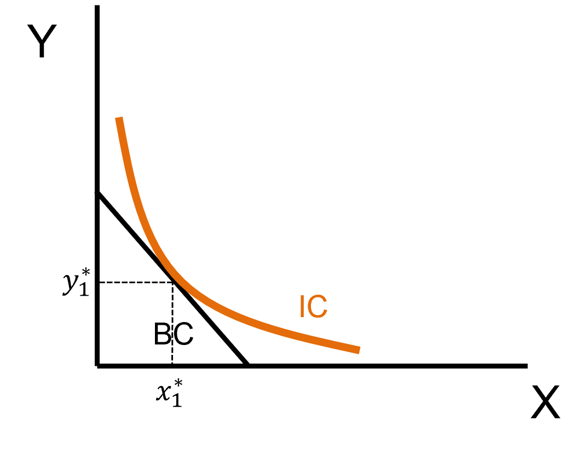
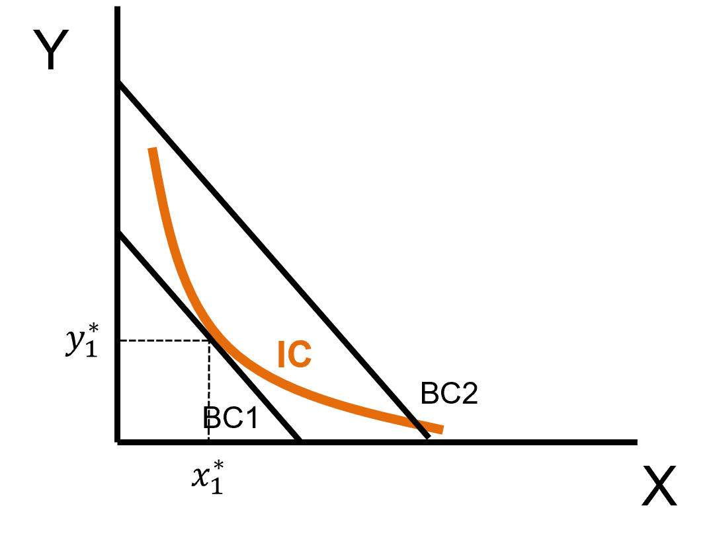
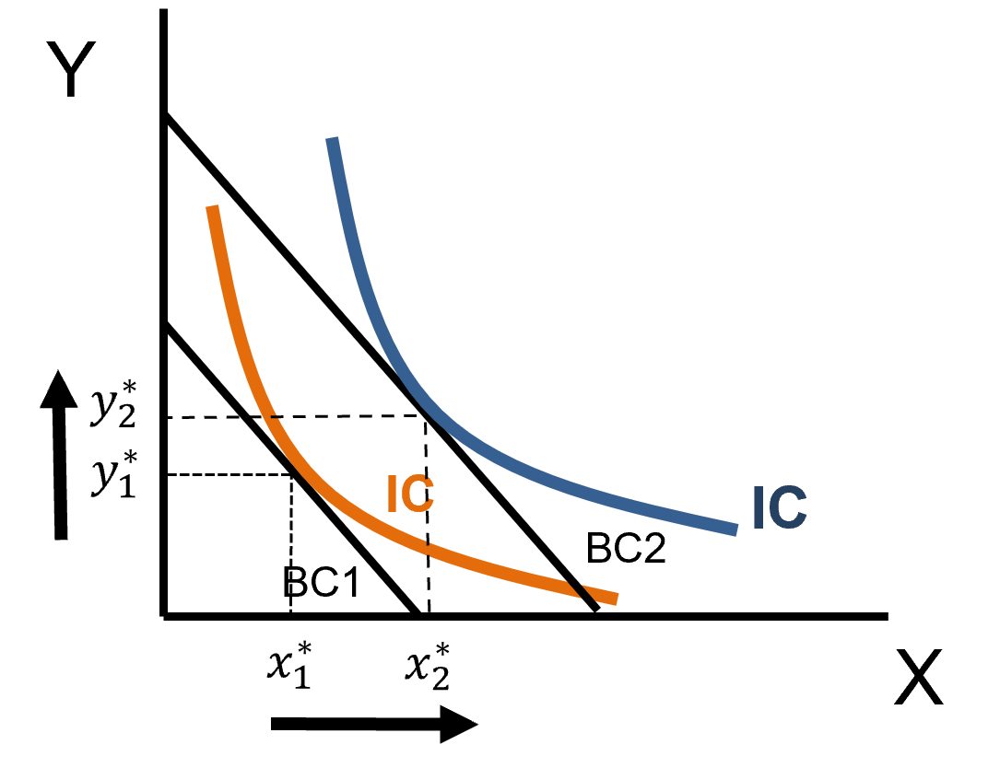
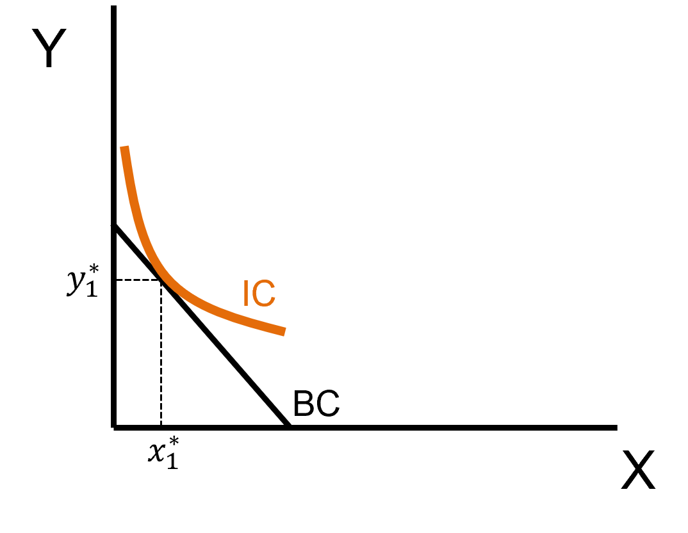
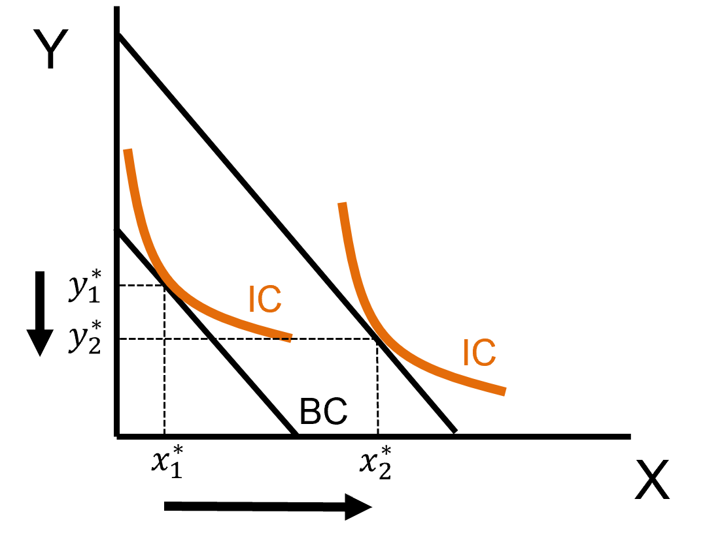
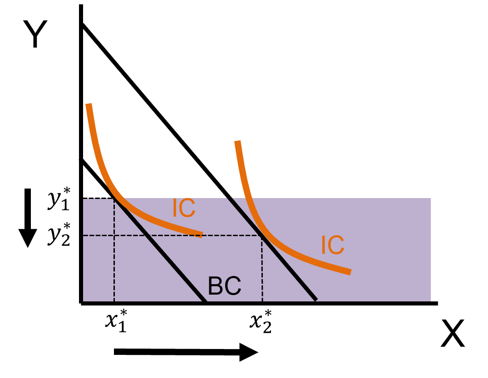
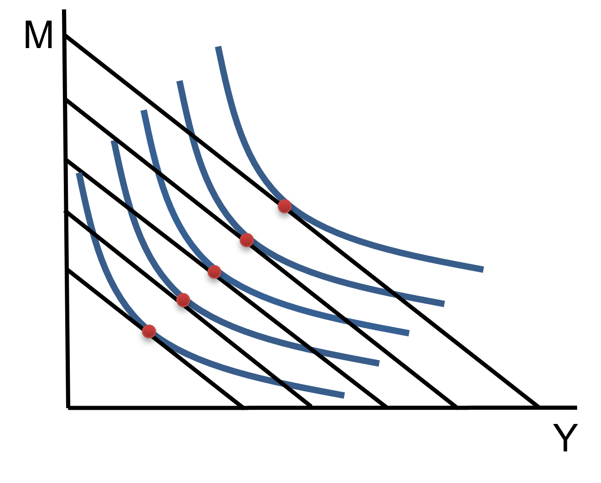
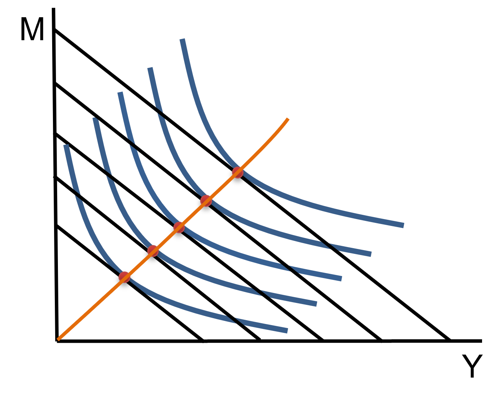
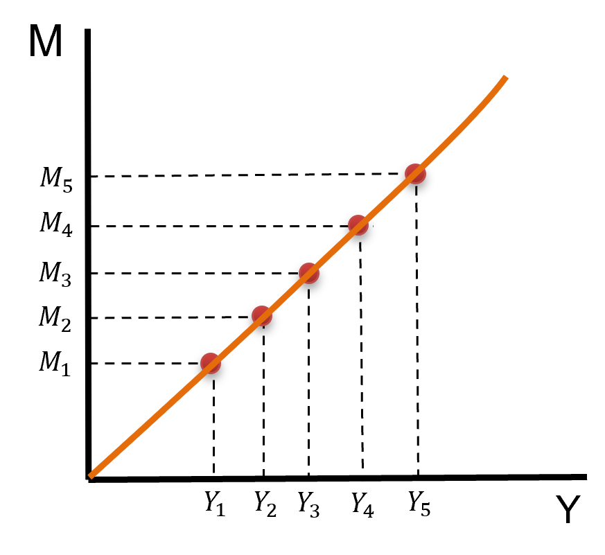
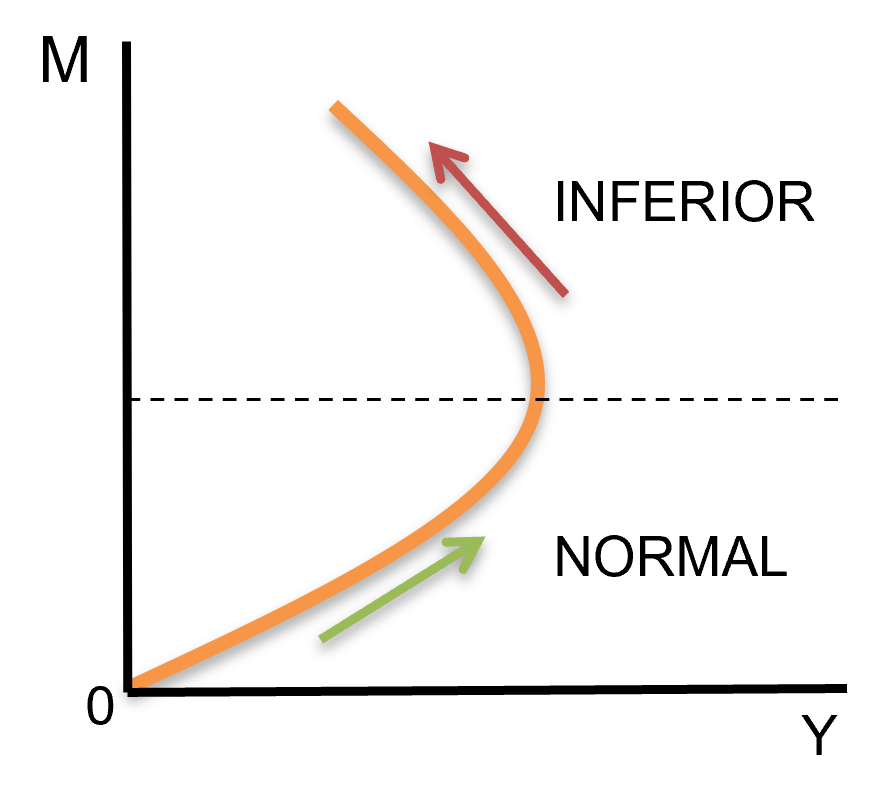

Visualizing the Change
Let’s start with a our standard optimized utility graph

. . .
What would happen if we Increase our income?
Visualizing the Change
With an increase in income, our budget constraint will:
Shift Outward

We find the new Maximizing Point

More Goods
The previous graphs tell us
When income \((M)\) goes up, you can now reach a higher IC and be better off (relatively)
This graph also makes an important assumption
- Both goods ,\(x\) and \(y\), are desirable
- We call these Normal Goods
. . .
Normal Goods are desirable, which simply means that if we have more income we will consume more of them
Other Types of Goods?
Does it always have to be the case that consumpution of both \(x\) and \(y\) has to increase in response to an increase in income?
. . .
No! There are goods we call Inferior Goods
- These goods are consumed less when income increases
- A classic example of this is Maruchan ramen noodles
Inferior Goods - Graph
Let \(y\) be an inferior good, the optimized utility graph would look something like
Maximized Utility

Increase in Income & Inferior Good \(y\)

Inferior Goods - Graph Intuition
With an inferior good (let’s keep saying \(y\)) there is a predictable shift when income increases
. . .

The new bundle must be in this region of the budget
Can Both Goods Be Inferior?
As your income increases, can you buy less of both goods?
- No! Why Not?
- The Budget Constraint does not allow it
- Recall that the BC looks like: \(P_{x} \cdot x + P_{y} \cdot y = M\)
. . .
If your income increases, and you decrease the amount of \(x\) you consume (\(x\) is an inferior good), then there is a lot of income leftover that is required to be spent
The only other option is to increase your consumption of \(y\)
. . .
In fact, if increasing your income has no effect on how much \(x\) you consume, you would still have to increase your consumption of \(y\)
Engel Curves
This curve describes the relationship between \(M^{*}\) and \(y^{*}\), with \(M\) on the vertical axis and \(y^{*}\) on the horizontal axis
Let’s build this by parts, starting with a bunch of income levels and the associated \(y^{*}\) consumption levels
. . .

Notice the axis!
Engel Curves
If we connect all our optimal levels of \(y^{*}\) we find our Engel Curve
Connect the dots

Our Engel Curve

Engel Curves
The important thing to consider about Engel Curves is the sign of the slope \(\rightarrow\) It tells us if a good is normal or inferior
- A Positive Slope means that when Income goes up, \(y^{*}\) increases and we say \(y\) is a normal good
- A Negative Slope means that when Income goes up, \(y^{*}\) decreases and we say \(y\) is an inferior good
. . .
We’ve seen that curves slopes can change, so we can ask ourselves:
Can a good be an inferior good over all income levels?
Engel Curves - Inferior Goods Always?
Can in be the case that no matter what my current income is, an increase in income will decrease my consumption of a good?
. . .
It is impossible!
- Even a good that is usually inferior, or better said, inferior over common income levels must be a normal good over low enough levels of income
- I’ll show you an example of an Engel Curve with a negative slope and we’ll see why
Engel Curves - Inferior Goods Always?
Think about our Instant Ramen example. When in college, the more money you have, the more you buy Instant Ramen (so it is a normal good).
But once you graduate and get that promised pay increase from graduating, you buy Instant Ramen less and less the higher your Income becomes (inferior good)
. . .

Engel Curves - Mathematically
We can formalize Engel Curves as:
- Engel Curves are graphs of the Demand Function
- \(x^{*} = f(P_{x},P_{y},M)\)
- Where we hold prices fixed and flip the axis
Engel Curves - Mathematically
Take our Cobb-Douglas example
\[U(x,y) = x^{\alpha}y^{\beta} \;\;\; \text{where} \;\;\; \alpha = \beta = P_{x} = 1\]
Also recall that
\[x^{*} = \dfrac{\alpha}{\alpha + \beta} \cdot \dfrac{M}{P_{x}}\]
. . .
Solving for \(M\) yields:
\[\begin{align*} x^{*} &= \dfrac{\alpha}{\alpha + \beta} \cdot \dfrac{M}{P_{x}} \\ x^{*} &= \dfrac{1}{2} \cdot M = \dfrac{M}{2} \\ x^{*} &= \dfrac{M}{2} \rightarrow M = 2x^{*} \end{align*}\]
What’s the slope of this demand tell us?
\[\begin{align*} \dfrac{\partial x}{\partial M} = \dfrac{1}{2} > 0 \end{align*}\]
It’s positive!
C-D will never have an inferior good
Engel Curves - Using Derivatives
We can show whether a good is normal or not over all income levels by taking the derivative with respect to \(M\)
\[\text{if} \;\; \dfrac{\partial x^{*}}{\partial M} > 0 \Rightarrow \text{Normal Good}\]
\[\text{if} \;\; \dfrac{\partial x^{*}}{\partial M} < 0 \Rightarrow \text{Inferior Good}\]
Back to Income Changes
We just saw that we can find whether a good is a normal or inferior by taking the partial derivative of the demand function w.r.t. income
- By knowing what category the good falls into, we can quickly estimate how demand will react to changes in income
- But this only tells us up or down, not magnitudes
- To find that, we will look at elasticities
Elasticities
They tell us how responsive demand is to income changes (later we will see price changes)
They follow the formula:
\[E_{x^{*},M} = \dfrac{\partial x^{*}}{\partial M} \cdot \dfrac{M}{x^{*}}\]
. . .
There are 3 steps to finding an elasticity
Take the partial derivative of the good w.r.t. \(M\)
Multiply the partial derivative by the ratio of the input variable to the response variable
- What is changing to what we are estimating to chagne
Substitute the original demand equation and simplify
Elasticities - Example
Let the Demand for \(x^{*}\) be:
\[x^{*} = \dfrac{M}{P_{x}}\]
1 - Take the partial derivative w.r.t. Income
. . .
\[\begin{align*} \dfrac{\partial x}{\partial M} = \dfrac{1}{P_{x}} \end{align*}\]
Elasticities - Example
The partial derivative is:
\[\dfrac{\partial x}{\partial M} = \dfrac{1}{P_{x}}\]
2 - Multiply the partial derivative by the ratio of input variable to the response variable \(\left(\dfrac{M}{x^{*}} \right)\)
. . .
\[\begin{align*} E_{x^{*},M} = \dfrac{\partial x^{*}}{\partial M} \cdot \dfrac{M}{x^{*}} \rightarrow \dfrac{1}{P_{x}} \cdot \dfrac{M}{x^{*}} \end{align*}\]
Elasticities - Example
\[ E_{x^{*},M} = \dfrac{\partial x^{*}}{\partial M} \cdot \dfrac{M}{x^{*}} \rightarrow \dfrac{1}{P_{x}} \cdot \dfrac{M}{x^{*}} \]
3 - Substitute the original demand equation in and simplify
. . .
\[\begin{align*} E_{x^{*},M} &= \dfrac{1}{P_{x}} \cdot \dfrac{M}{\color{red}{x}} = \dfrac{1}{P_{x}} \cdot \dfrac{M}{\color{red}{\dfrac{M}{P_{x}}}} = \dfrac{1}{P_{x}} \cdot P_{x} = \dfrac{P_{x}}{P_{x}} = 1 \end{align*}\]
. . .
So we would say that good \(x\) has an Income Elasticity of 1
Elasticities: What do They Mean?
They tell us how to translate a proportional change in \(x\) into a proportional change in \(y\)
So for the elasticity
\[E_{x,y} = \eta \]
If \(y\) goes up by \(10\%\), \(x\) increases by \(\eta \cdot 10\%\)
Equivalently, if \(y\) goes down by \(20\%\), \(x\) decreases by \(\eta \cdot 20\%\)
. . .
Elasticities can be
- Positive, negative, zero, or infinite
. . .
When considering Income Elasticities we know that
Normal goods have positive elasticities
Inferior goods have negative elastiticies
Elasticities: Responsiveness
We can describe how responsive goods are in terms of elasiticity
If the absolute value of an elasticity is greater than 1 \((> 1)\) we say that there is an elastic response
- \(E_{x,M} = 2 \rightarrow M \uparrow 10\%, \; x \uparrow 20\%\)
If the absolute value of an elasticity is less than 1 \((<1)\) we say that there is an inelastic response
- \(E_{x,M} = 0.5 \rightarrow M \uparrow 10\%, \; x \uparrow 5\%\)
If the absolute value of an elasticity is equal to 1 \((=1)\) we say that the response is unit elastic
If the elastiscity is exactly equal to 0 we call this perfectly inelastic
If the elasticity is infinite \((\infty)\) we call this perfectly elastic
Make drawing of perfectly inelastic and perfectly elastic on whiteboard